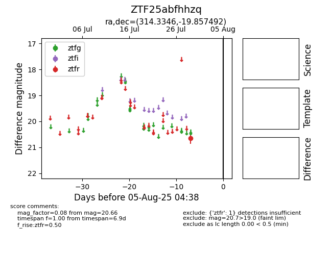

Target ZTF25abfhhzq at 2025-08-05 04:38, see:
FINK: fink-portal.org/ZTF25abfhhzq
Lasair: lasair-ztf.lsst.ac.uk/objects/ZTF25abfhhzq
ALeRCE: alerce.online/object/ZTF25abfhhzq
alt names
ZTF25abfhhzq (ztf,fink)
coordinates:
equatorial (ra, dec) = (314.3346,-19.85749)
galactic (l, b) = (27.3507,-36.29528)
photometry
last ztfr=20.66
1 ztfr detections
